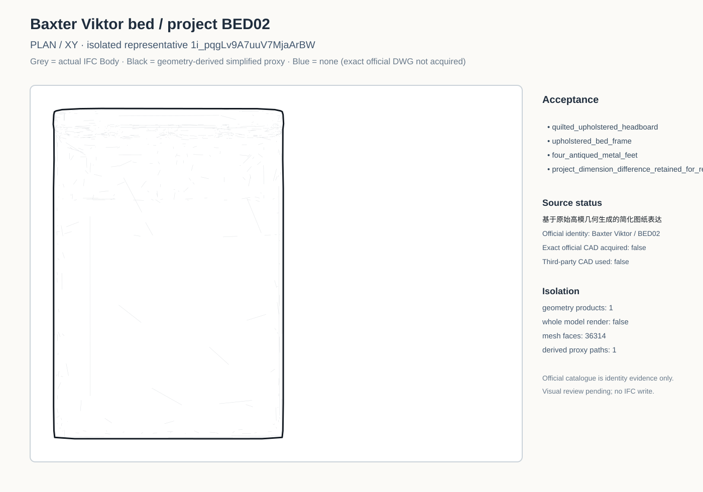
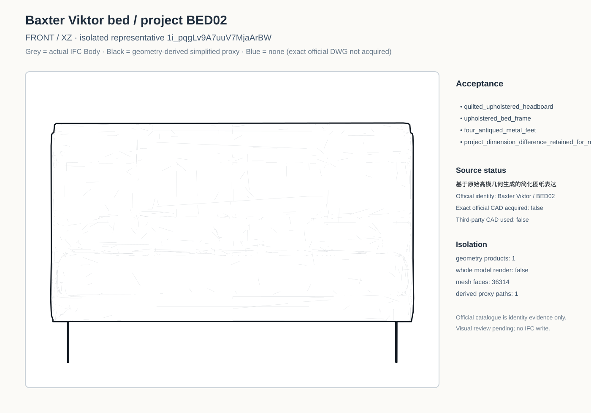
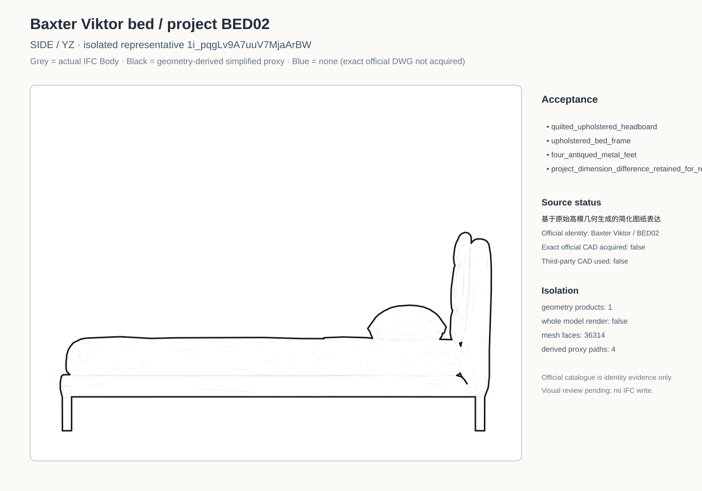

Plan

Black line = 基于原始高模几何生成的简化图纸表达. The supplemental blue line is the corrected 1:1 native Viktor 160×200 DWG review reference from ARREDO + layer 0 geometry; _QUOTE dimensions and TEXT/MTEXT are excluded. It remains family/reference evidence only and has not replaced the black primary candidate.





7a50b87e8f48a7c2bfbaa9f1dabdfca7155fa684b2325c66aa1ae15c8ab0a25c